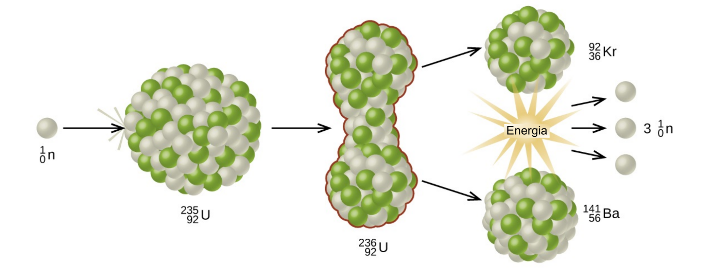
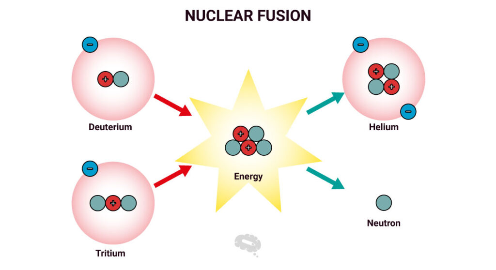

Maghasadás (Fisszió)
Az aktiválás folyamat a A természetben a spontán maghasadás bekövetkezésének valószínűsége nagyon kicsi. Ennek kvantumfizikai magyarázata van. Ahhoz, hogy a jelenség bekövetkezzen, az atommagot átmenetileg magasabb energiájú állapotba kell hozni. Ezt a folyamatot aktiválásnak, az aktiváláshoz szükséges energiát aktiválási energiának nevezzük.
A természetben előforduló atommagok közül aktiválással is csak a 235-ös tömegszámú urán izotóp képes hasadásra. Az aktiváláshoz lassú neutronokra van szükség. Ezen neutronok energiája a hőmozgás energiájának tartományába esik, ezért termikus neutronoknak is nevezik őket.
A maghasadáskor felszabaduló energia A maghasadás során felszabaduló energia 200 MeV, amelynek jelentős része a szétlökődő atommagok mozgási energiája. Az energiafelszabadulásra ismét a tömeghiány ad magyarázatot. A keletkező hasadási termékek együttes tömege kisebb, mint a 235-ös urán izotóp és a befogott neutron együttes tömege.
A felszabaduló energiát a hasadási termékek a többi atommal való ütközésekben veszítik el úgy, hogy a többi atom mozgási energiáját növelik. Ennek következtében a hasadó magot tartalmazó anyag hőmérséklete megnő. Az így keletkező hőenergiát hasznosítják az atomerőművekben.
A maghasadás folyamata A hasadás a következő módon zajlik le: a 235-ös urán izotóp befogja a neutront és 236-os tömegszámú izotóppá változik. A neutron befogása miatt azonban a mag rezgésbe jön. A rezgés következtében az atommag alakja megváltozik, hasonlóan egy rezgésbe hozott folyadékcsepphez. Amikor az atommag két része a rezgés miatt túlzottan eltávolodik egymástól, a két szélső része között megszűnik az erős kölcsönhatás, míg a Coulomb-taszítás alig csökken. Ennek következtében a mag két részre hasad, és a két rész a Coulomb-taszítás miatt nagy sebességgel szétlökődik.
Magfúzió
Magfúziónak nevezzük az olyan magreakciót, amelyben két könnyű atommag egyetlen maggá egyesül. Korábban, Az erős kölcsönhatás. Az atommag kötési energiája című fejezetben láttuk, hogy a vasnál könnyebb magokban a tömegszám növekedése az egy nukleonra jutó kötési energia csökkenésével jár együtt. Emiatt a fúzióval létrejövő atommag energiája kisebb, mint a két különálló mag összenergiája volt, tehát a rendszer a fúzió során alacsonyabb energiájú állapotba kerül. A felszabaduló energia nagy része a folyamatban keletkező elemi részecskék mozgási energiájaként jelenik meg, de mindez a sorozatos ütközések következtében végül is a környezet belső energiáját növeli. Egy lehetséges magfúzió egyenlete és a folyamatban felszabaduló energia nagysága: 2/1H+3/1H = 4/2He + 1/0n
Látható, hogy a fúzió során felszabaduló energia kisebb a 235-ös uránizotóp hasadásakor felszabaduló 32 pJ energiánál, de a fúziónál lényegesen kisebb tömegű nukleáris üzemanyagra van szükség. Ebben a fúzióban 5 nukleon vesz részt, a hasadásban 235. A hasadásban tehát 47-szer nagyobb tömegű anyag vesz részt, a felszabaduló energia azonban csupán -szer nagyobb. A fúzió létrejöttét gátolja, hogy az atommagoknak a magerők hatótávolságán belülre egymástól m-nél közelebbre kell kerülni. Ez csak akkor lehetséges, ha elegendően nagy mozgási energiájuk van ahhoz, hogy legyőzzék a pozitív töltésükből adódó elektrosztatikus taszítóerőt.
Elektromos mezővel felgyorsított atommagok segítségével ilyen reakciókat létre lehet hozni. Az ilyen reakciók azonban az atommagok kis mérete miatt ritkák, ezért sok részecskét feleslegesen kell felgyorsítani. A fúzióhoz szükséges sebesség a hőmérséklet növelésével is elérhető, a magasabb hőmérsékletű anyagban ugyanis nagyobb sebességű a hőmozgás. A számítások azt mutatják, hogy a magfúzióhoz 0–100 millió C körüli hőmérsékletre kell a kiindulási anyagot hevíteni. Az így megvalósuló fúziót termonukleáris reakciónak nevezik.

